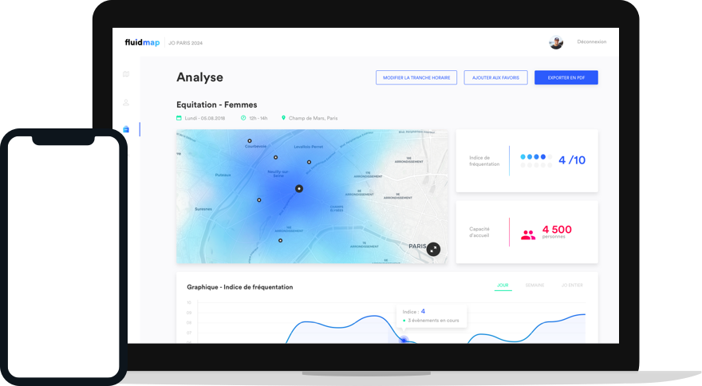
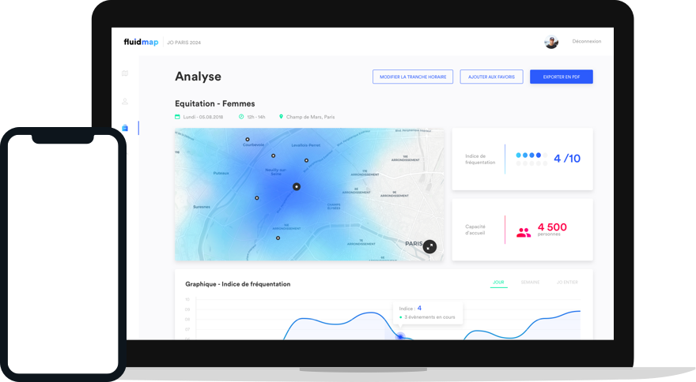

L’outil de visualisation et d'anticipation de densités de personnes en zone urbaine

L’outil de visualisation et d'anticipation de densités de personnes en zone urbaine
Fluidmap est pensé pour vous aider à anticiper les densités de fréquentations de Paris 2024.
Préparez la période des JO en un clin d’oeil grâce à notre outils de prévision des flux
Pendant les JO recevez des alertes en temps réel pour être toujours informé.
Sur mobile ou ordinateur, vos données sont accessibles depuis n’importe où.
Avec Fluidmap, prennez le contrôle sur nos données, et explorez les différents evenements pour savoir où se situera les densités les plus importantes et quand !


Depuis notre carte accèdez à tout les evenements sportifs des JO de Paris 2024, le lieu, les horraires ou encore les transports en commun à proximité, fluidmap regroupe et traite toutes ces informations.x
Notre carte de chaleur fournis une représentation graphique des flux de personnes sur tout Paris par tranche de 2 heures. Vous pourrez ainsi clairement savoir ou se déplace ces flux.